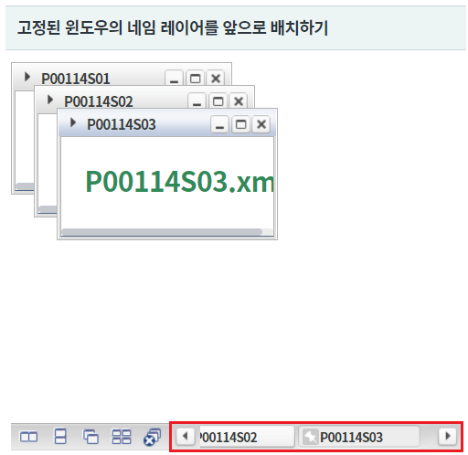
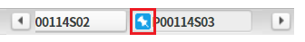
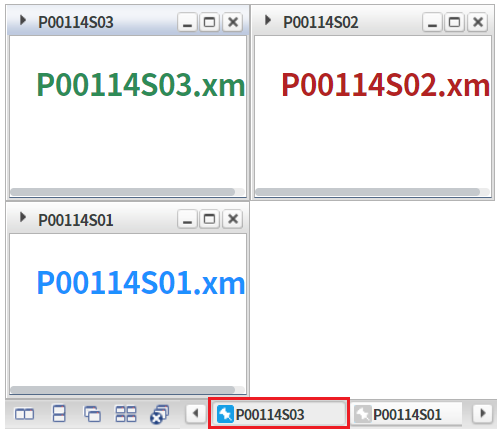
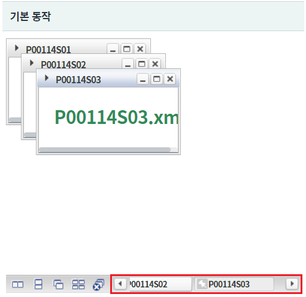
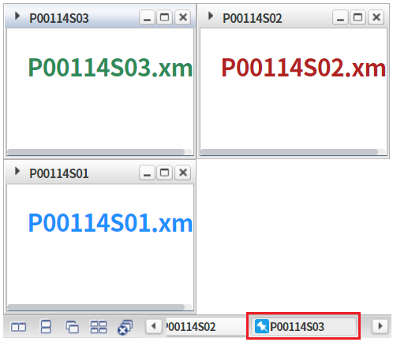
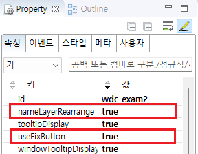
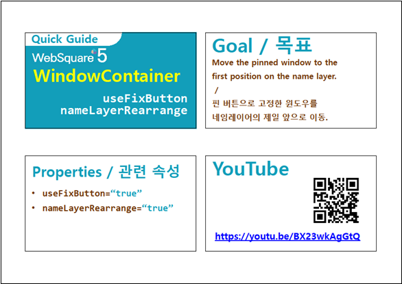

WindowContainer의 속성 중 "nameLayerRearrange" 설정의 예제입니다. 속성 "nameLayerRearrange"는 네임 레이어에 고정 버튼이 있을 때 고정된 윈도우의 네임 레이어가 앞으로 배치되는 기능을 제공합니다. 이 기능은 윈도우 정렬 아이콘 클릭하여 윈도우가 재정렬되어야 적용됩니다.
고정된 윈도우의 네임 레이어를 앞으로 배치하기
기본 동작
WindowContainer에 출력된 네임 레이어의 순서가 "P00114S01", "P00114S02", "P00114S03" 임을 확인합니다.
[브라우저(Chrome) 실행 예시]

네임 레이어 "P00114S03"의 고정 핀 아이콘을 클릭합니다.
[브라우저(Chrome) 실행 예시 - 윈도우 네임 레이어]

[브라우저(Chrome) 실행 예시 - 윈도우 정렬 아이콘]
네임 레이어 "P00114S03"이 맨 앞쪽으로 이동되었음을 확인합니다.
[브라우저(Chrome) 실행 예시 - 윈도우 네임 레이어]

WindowContainer에 출력된 네임 레이어의 순서가 "P00114S01", "P00114S02", "P00114S03" 임을 확인합니다.
[브라우저(Chrome) 실행 예시]

네임 레이어 "P00114S03"의 고정 핀 아이콘을 클릭합니다.
[브라우저(Chrome) 실행 예시 - 윈도우 네임 레이어]
[브라우저(Chrome) 실행 예시 - 윈도우 정렬 아이콘]
네임 레이어 "P00114S03"의 위치가 동일한 것을 확인합니다.
[브라우저(Chrome) 실행 예시 - 윈도우 네임 레이어]

윈도우를 생성(추가)하는 스크립트는 생략되었습니다.
WindowContainer의 속성을 정의합니다.
[필수] nameLayerRearrange="true" //[default:false, true] 네임레이어에 고정버튼이 있는 경우, 정렬 아이콘을 클릭하면 고정된 window의 name layer를 앞으로 이동시킬지 여부. 단, useFixButton="true"인 경우 동작.
[필수] useFixButton="true" //[default:false, true] 툴바에 생성되는 네임레이어에 고정 버튼을 사용할 지의 여부.
그림 1.웹스퀘어5 SP5 스튜디오의 Property View(속성창) 예시

[소스 코드 예시]
<!-- windowContainer 의 소스 본문 예시 --> <w2:windowContainer nameLayerRearrange="true" useFixButton="true" id="wdc_exam2"> <!-- 중략 --> </w2:windowContainer>
nameLayerRearrange
useFixButton
[웹스퀘어5 SP5 개발 가이드] WindowContainer
링크 : https://docs1.inswave.com/sp5_user_guide/2059d4ce88b2fc16#c65cb349eb266637
[웹스퀘어5 SP5 개발 가이드] WindowContainer 윈도우 고정 (nameLayerMove & nameLayerRearrange)
링크 : https://docs1.inswave.com/sp5_user_guide/2059d4ce88b2fc16#7b3bc95590f9caa8
WindowContainer 윈도우 고정 (nameLayerMove & nameLayerRearrange)
링크 : https://youtu.be/BX23wkAgGtQ
